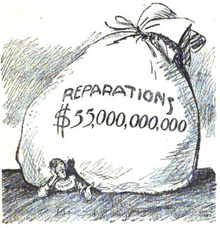
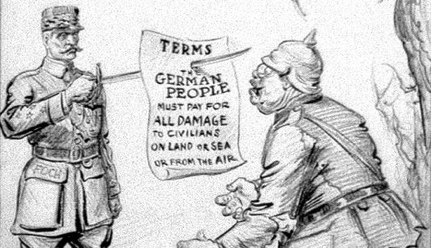

 The League of Nations was one Woodrow Wilson’s greatest ideas, but due to the Treaty of Versailles being created by the French and British, the League did not turn out to be what Wilson envisioned. The goal of the League of Nations was to create to prevent future wars. It was supposed to have the power to put sanctions on countries that were not following the ideals of the League of Nations. It also had a rotating and permanent council, similar to how the U.N’s Security Council. The United States would never join due to disagreement, and the League of Nations would continue with moderate success until 1930s.
Germany had major problems with the post war treatment it got, the treaty made them pay for most damage done in the war. Many Germans were unhappy with their loss in the war, but also how they were treated. One specific Austrian who fought in the Western Front was especially displeased with the loss. Adolf Hitler would rise to power in Germany with a platform against socialist and Jews. He would overtake the German Worker Party and it would overtime become known as the Nazi Party. As a depression took over Germany, the Nazi Party promised jobs and a return Germany to it glorious days as an empire. In the by 1933, The Nazi party controlled over a third of the entire German government, and Hitler was appointed chancellor. Hitler would continue to rise in power and due to the death of the Prime Minister and a fire at their government building he would become the leader of Germany.
The League of Nations was unable to curb his rise to power. The League of Nations was unable to stop Japan from invading Manchuria, which started to cause cracks in the league. The League of Nations played in its own self-interest of the who had permanent seats, and when a convention was held to disarm Germany, Germany would leave the league as it thought it was unfair to be the only country being disarmed.